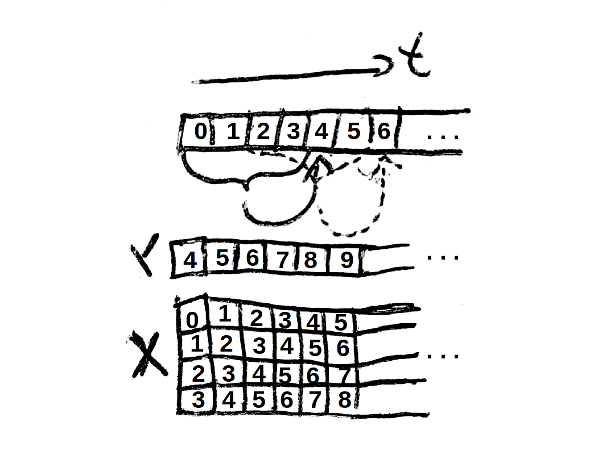

SeqMDN module¶
This software toolbox took the theoretical background from Mixture Density Networks by Christopher M. Bishop, 1994. Given a sequence of data. The model approximates the underlying density of the provided sequence given the observation of a fixed amount of previous timesteps. The model is invariant of the dimensionality or modality of the data. Given the first coordinate represents the ‘time’ or ‘order’ of the sequence. A Mixture Density Network has universal approximation capabilities, thus we are also independent of correlation of the different dimensions. When the density function \(p(t|x)\), prior to past events is approximated, the model is capable of drawing autoregressive random variables from the density function and thus generating a sequence with a similar features as the provided sequence we fed data from.
-
class
SeqMDN.SeqMDN(data)¶ Bases:
objectThis class provides an object that is capable of when its feed with data, predict the next possible outcome for a fixed sequence of input provided.
Parameters: - data – original data the model is fittet through
- c – dimensionality of the model, obtained be data input
- num_data – amount of data provided by the input
Tensorflow nodes:
Parameters: - x – input
- t – label
- α – weight of mixture
- σ – simga, std variation
- μ – mean
- Φ – probability function
- e – error messured for the model
- opt – optimizer
Todo
introduce variables global, maybe refer to hyperparameter global definition
- The N dimensional np.ndarray data will provide the learning platform. The first dimension is indicating time or
- causality dimension of states. Furthermore data is assumed to be sorted in time/causality.
-
_denormalize(x)¶ Inverse operation for Normalize data pattern x : Neurocat preprocessing method.
Parameters: x – data pattern to be denormalized. Returns: denormalized x
-
_inference(α, σ, μ, Φ)¶ Chooeses maximal value of alpha to get greedy density function with maximum probability to occur.

Parameters: - α –
- σ –
- μ –
- Φ –
Returns: greedy mixture parameter:
- _α
- _σ
- _μ
- _Φ
- _π
-
_loss(α, Φ)¶ - \[p(t|x) = \sum_{i=1}^{m} α(x)Φ(t|x)\]
Parameters: - α –
- Φ –
Returns: p(t|x) representing the error/loss of the system in particular training pattern.
-
_mixture(z, t)¶ Takes network outputs z and transforms them into mixture components: α, σ, μ.

The gaussian distribution Φ according to α, σ, μ and the label t will be calculated as output.
Parameters: - z (tf.array) – shape=(?, (c + 2) * modi * futHor)
- t (tf.array) – shape=(?, 1, c)
Returns: tuple of tf.array, namely (α, σ, Φ, μ)
α, σ, Φ with shape=(?, modal, 1) and μ with shape=(?, modal, c)
-
_normalize(x)¶ Normalize data pattern x : Neurocat preprocessing method.
Parameters: x – data pattern to be normalized. Returns: normalized x
-
_optimizer(e)¶ Optimizer for SeqMDN. Minimizes the error e by propagating gradient through computation graph.
Parameters: e – error/loss Returns: operational node opt
-
_timeembedding()¶ time embedding of provided data.
Returns: tuple of np.ndarray, namely x_data and t_data embedded in time
-
fit()¶ Fit mixture model for approximating the following density, for
x ~ data p(x[t] | x[t-1], x[t-2], ..., x[t-pasHor])
Train Neural Network with Mixture Density Components.
Returns: None
-
graph()¶ Build tensorflow computation graph for SeqMDN
Todo
picture of graph
Returns: Minimal model nodes to describe SeqMDN: - x input node (tf.placeholder)
- t label node (tf.placeholder)
- α calculation of α
- σ calculation of σ
- μ calculation of μ
- Φ calculation of Φ
Inference:
- _α
- _σ
- _μ
- _Φ
- _π
Optimization:
- e
- opt
Saving:
- save_op
-
predict(x=None, s=500)¶ Predict s future states with x as initial state.
SeqMDN has a model of its environment \(P\). When confronted with a state \(x \in \mathbb{R}^{(m, m_{1}, \dots, m_{d-1})}\) with horizont \(m \in \mathbb{N}\) SeqMDN occopies an approximation of the density approximation for the next state \(y \in \mathbb{R}^{(n, m_{1}, \dots, m_{d-1})}\) with \(n \in \mathbb{N}\) \(m > n\). The order of the first (zeroth) dimension can be referred to as time or causality.
Todo
correct mistake in operation. Time is too big when we concatenate
Todo
check out if we can build a thing that is capable of reading that form or an other more flexible version
We recursively define the input for the model \(\mathcal{X}\) as an auto regressive agent.
\[\mathcal{X}_{1} := x\]The model calculates recursively with \(t_{i}\) ranomly sampled according to \(t_{i} \sim p(t | x_{i})\)
\[\mathcal{X}_{i+1} := t_{i}\]To calculate the output of the model we define. For x and y, defined above, we define \(\circledast\) as
\[x \circledast y := (x(1, *), \dots, x(m, *), y(1, *), \dots, y(n, *)) \in \mathbb{R}^{(m+n, m_{1}, \dots, m_{d-1})}\]\[\mathcal{O} := \mathcal{X}_{1} \circledast \dots \circledast \mathcal{X}_{s}\]Parameters: - x – Past input, prior for the system.
- s – amount of samples to be auto regressively generated.
Returns: inference, params, probs, explain what it means, maybe sample output

{kind=link}